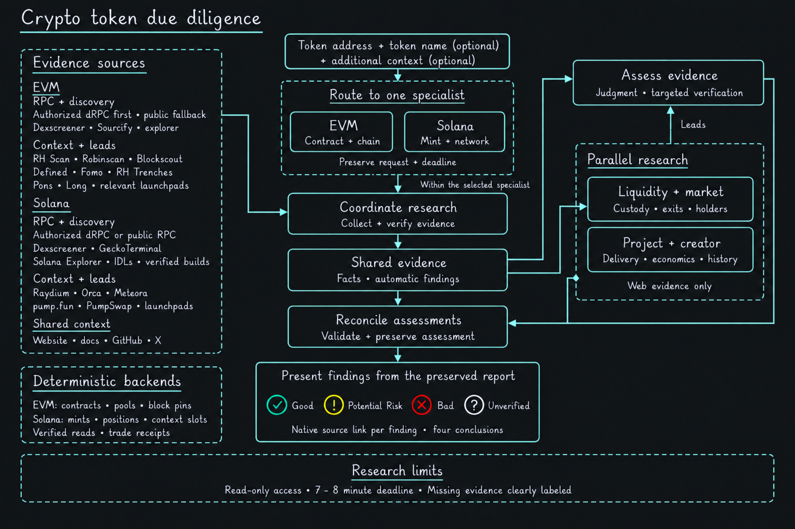

<!doctype html>
<html lang="en">
<meta charset="utf-8">
<meta name="viewport" content="width=device-width, initial-scale=1">
<title>Crypto token due diligence architecture</title>
<style>
body { margin: 0; padding: 24px; background: #141619; color: #edf4f6; font: 16px system-ui, sans-serif; }
main { max-width: 1536px; margin: auto; }
img { display: block; width: 100%; height: auto; }
nav { display: flex; justify-content: center; gap: 24px; margin-top: 20px; }
a { color: #c2e5ec; }
a:focus-visible { outline: 2px solid #f4da58; outline-offset: 5px; }
</style>
<main>
<a href="crypto-token-diligence-architecture-dark.png" aria-label="Open full-size architecture diagram"></a>
<nav aria-label="Individual diagrams"><a href="evm-diligence-architecture-dark.png">EVM architecture</a><a href="solana-diligence-architecture-dark.png">Solana architecture</a></nav>
</main>
</html>
